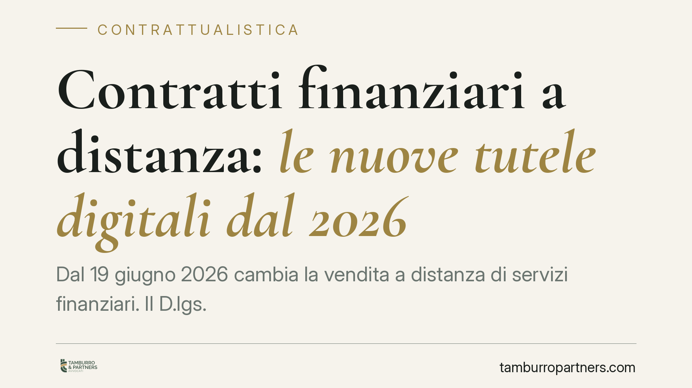

Contratti finanziari a distanza: le nuove tutele digitali dal 2026
Dal 19 giugno 2026 cambia la vendita a distanza di servizi finanziari. Il D.lgs. 209/2025 introduce un recesso rafforzato, un pulsante di cancellazione semplice, il divieto di interfacce ingannevoli e regole sull'uso dell'intelligenza artificiale. Previste sanzioni fino a 75.000 euro. Analizziamo cosa cambia per consumatori e operatori del settore.

Il quadro: cosa introduce il D.lgs. 209/2025
Il decreto legislativo 209/2025 inserisce nel Codice del consumo una nuova sezione (II-bis) dedicata ai contratti di servizi finanziari conclusi a distanza. L'intervento recepisce la direttiva europea 2023/2673 e si applica a qualunque rapporto bancario, assicurativo, di investimento o previdenziale stipulato tramite canali digitali o telefonici, senza la presenza fisica delle parti.
Le regole diventano operative dal 19 giugno 2026. Da quella data, banche, intermediari finanziari, assicurazioni e piattaforme fintech dovranno adeguare moduli contrattuali, interfacce e procedure interne.
Inquadramento normativo
La nuova sezione II-bis del Codice del consumo (D.lgs. 206/2005, come modificato) fissa quattro pilastri.
Diritto di recesso. Il consumatore può recedere senza motivazione entro 14 giorni dalla conclusione del contratto, che salgono a 30 giorni per i contratti relativi a prodotti assicurativi sulla vita e a schemi pensionistici individuali. Il termine decorre dalla stipula o, se successiva, dalla ricezione delle condizioni contrattuali e delle informazioni precontrattuali. È il cosiddetto *ius poenitendi*: la facoltà di ripensamento riconosciuta a chi contrae a distanza, quando non ha potuto valutare di persona l'offerta.
Pulsante di cancellazione. Se il contratto è stato concluso online, l'operatore deve mettere a disposizione una funzione di recesso digitale facilmente individuabile e utilizzabile. In sostanza: se il cliente ha potuto aderire con un click, deve poter recedere con analoga semplicità.
Divieto di dark pattern. Vietate le interfacce costruite per condizionare o distorcere la scelta del consumatore: percorsi di uscita nascosti, consensi preimpostati, pressione visiva verso l'opzione più onerosa. Il *dark pattern* è, appunto, un'architettura ingannevole del sito o dell'app.
Uso dell'intelligenza artificiale. Quando l'operatore impiega sistemi automatizzati o di IA nell'interazione con il cliente — ad esempio chatbot o strumenti di profilazione — deve garantirne la trasparenza e assicurare, su richiesta, l'intervento di un operatore umano.
La vigilanza è affidata, per i rispettivi ambiti, a Banca d'Italia, Consob, Ivass e Covip, con un apparato sanzionatorio che va da 7.500 a 75.000 euro.
Implicazioni pratiche
Per il consumatore cambia il margine di manovra: più tempo per ripensarci e strumenti più chiari per uscire dal contratto. Il recesso, se esercitato nei termini, obbliga l'operatore alla restituzione di quanto versato, salvo il corrispettivo dei servizi effettivamente resi prima del ripensamento.
Per gli operatori l'impatto è organizzativo prima ancora che legale. Non basterà inserire una clausola: andranno riprogettati i flussi di adesione e di uscita, le informative precontrattuali e la gestione dei consensi. Un percorso di cancellazione macchinoso o un'informativa carente può ora tradursi in una contestazione sanzionabile.
Particolare attenzione meritano i sistemi automatizzati. La trasparenza sull'uso dell'IA non è una formalità: incide sulla validità del rapporto informativo con il cliente e sulla tracciabilità delle scelte compiute in fase di sottoscrizione.
Cosa fare in concreto
- Mappare i contratti a distanza. Individuate tutti i prodotti e servizi commercializzati online o per telefono che ricadranno nella nuova disciplina.
- Riprogettare i flussi digitali. Predisponete il pulsante di cancellazione e verificate che il percorso di recesso sia semplice almeno quanto quello di adesione.
- Rivedere le interfacce. Eliminate consensi preimpostati, opzioni nascoste e ogni elemento grafico che possa configurare un dark pattern.
- Documentare l'uso dell'IA. Rendete trasparente l'impiego di chatbot e strumenti automatizzati e prevedete sempre l'alternativa dell'intervento umano.
- Aggiornare moduli e informative. Allineate le informazioni precontrattuali ai nuovi termini di recesso (14 o 30 giorni) prima della scadenza del 19 giugno 2026.
Consigliamo di avviare la verifica di conformità con ampio anticipo: l'adeguamento tecnico delle piattaforme richiede tempi che non vanno sottovalutati.
Disclaimer
Contributo informativo a cura di Tamburro & Partners - Avv. Giuseppe Tamburro. Non costituisce parere legale.
Ogni contratto ha il suo equilibrio.
Se vuoi una revisione delle clausole o una redazione su misura, scrivi allo studio. Ti rispondiamo entro un giorno lavorativo.